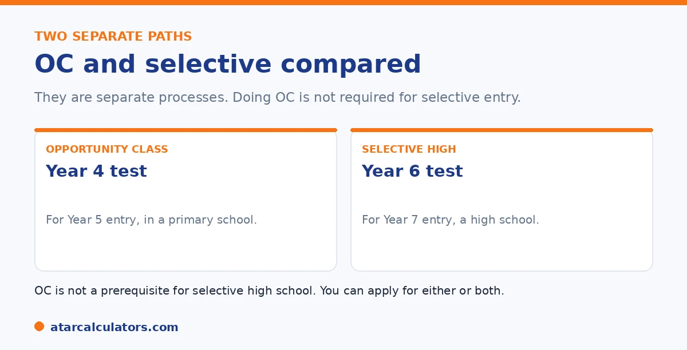

Here is the short version. The OC test is sat in Year 4, for entry into an Opportunity Class in Year 5. That is a class inside a primary school. The selective test is sat in Year 6, for entry into a selective high school in Year 7. They are separate processes, sat two years apart. Doing OC is not needed for selective entry, and missing OC does not rule it out. Many families try both, since they happen at different ages.
OC and selective entry are easy to confuse, because both are for high-potential students and both use a similar test. They are, however, two separate things at two different stages.
Below is the difference, and how to decide. To estimate a result for either, use our OC calculator or selective calculator.
Key takeaways
- OC is a Year 4 test, for a Year 5 class inside a primary school.
- Selective is a Year 6 test, for Year 7 entry into a high school.
- They are separate processes, sat two years apart.
- OC is not needed for selective entry.
- Missing OC does not rule out selective later.
- Many families try both, since they happen at different ages.
The key difference
The simplest way to see it is by age and place. An Opportunity Class is for Years 5 and 6, sits inside a primary school, and entry is decided by a test in Year 4. A selective high school is for Years 7 to 12, is its own campus, and entry is decided by a test in Year 6.

The tests are similar in style, since both come from the same pipeline and both test reading, maths reasoning, and thinking skills. The selective test adds a writing section, and is harder, since it is sat two years later.
Is OC a stepping stone to selective?
Not officially. OC and selective are separate processes, and one is not a prerequisite for the other. A child who does an OC has no automatic advantage in selective entry, and a child who never did an OC is not disadvantaged.
That said, the skills overlap. A child who built strong reasoning for the OC test in Year 4 is working on the same foundations the selective test will draw on in Year 6. So OC preparation can help indirectly, even though it is not needed.
Want to estimate a result for either test?
Try the selective calculator →Should your child try both?
For many families, yes. Because the two happen at different ages, trying OC in Year 4 does not stop a child from sitting the selective test in Year 6. They are two separate chances, not an either-or choice.
The decision comes down to your child. If they would benefit from an OC and are ready in Year 4, it is worth a try. If not, you can simply aim for selective entry later. Neither path is the only route to a good education.
How to decide what is right
Think about your child, not just the opportunity. Consider whether an OC place would suit them, including the daily commute, since OCs sit inside specific host schools. Consider whether they are ready for a test at a young age, and how they handle pressure.
Above all, keep it low stakes. Both OC and selective are options, not necessities. A child thrives in many settings, and missing either is not a setback. For how each test works, see our OC guide and selective guide.
A few concrete questions make the decision clearer. First, timing and readiness. The OC test is sat in Year 4 for Year 5 entry. The selective test is sat in Year 6 for Year 7 entry, so OC asks a younger child to handle a formal, timed exam. If your child is not yet comfortable with that kind of pressure, waiting for the selective test in Year 6 is perfectly reasonable. Skipping OC does not disadvantage a later selective application. Second, the practicalities. An OC class sits inside a specific host primary school. So factor in the commute and whether your child is happy leaving their current school and friends two years early. A selective high school is a full school move that would happen at the normal high-school transition point anyway, which many families find a more natural break. Third, fit over prestige. Some children flourish with the pace and peer group of a selective setting. Others do better in a strong local school where they are comfortable. The healthiest framing is that these are two independent opportunities, not a ladder you must climb. You can try one, both or neither, and there is no wrong answer, only the one that suits your particular child.
Different ages, different tests
The two sit at different stages. The OC test is in Year 4, for entry to Year 5. The selective high school test is in Year 6, for entry to Year 7. They are separate assessments, two years apart.
The tests differ too. OC has Reading, Mathematical Reasoning and Thinking Skills, with no writing. The selective test adds a writing task. So each needs its own preparation.
OC is not required for selective entry
An Opportunity Class place is not a prerequisite for a selective high school. Children who never attended an OC apply for, and win, selective places every year.
So do not treat OC as a gate your child must pass through. It is one optional pathway. Missing OC, or skipping it entirely, takes nothing away from a later selective application.
Deciding what suits your child
The choice between aiming for OC, selective, both or neither should rest on your child, not on treating one as a stepping stone. Consider their readiness, their wellbeing, and where they would be happy.
So ask what suits this particular child now. For some, an early OC place is a great fit. For others, a strong local school with extension, then a later selective attempt, works better.
Keeping wellbeing first
For young children, wellbeing has to come before any test. The OC and selective processes are worthwhile to consider, but they should never crowd out an ordinary, happy childhood.
So whichever path you weigh, keep perspective. A child who is rested, supported and still enjoying learning will do better, and be better, than one who has been pushed hard through a stressful process too young.
Common questions
What is the difference between OC and selective high school?
The OC test is sat in Year 4 for a Year 5 class inside a primary school. The selective test is sat in Year 6 for Year 7 entry into a separate high school. They are two different processes at two different ages.
Should my child try both?
Many families do. Because OC is in Year 4 and selective is in Year 6, trying one does not stop the other. They are two separate chances, so it comes down to whether each suits your child.
Is OC a stepping stone to selective?
Not officially. They are separate processes, and OC is not a prerequisite for selective entry. The skills overlap, though, so OC preparation can help indirectly with the selective test two years later.
Does doing OC help with selective entry?
Indirectly. There is no automatic advantage. But the reasoning skills built for the OC test in Year 4 are the same foundations the selective test draws on in Year 6. A child who never did OC is not disadvantaged.
Is missing OC a problem for selective?
No. Missing an OC place does not rule out selective entry, since the two are separate. A child can sit the selective test in Year 6 regardless of whether they did an OC.
Estimate a result for either test
Use our free OC and selective calculators for a rough competitiveness guide. No signup.
Open the OC score calculator →Related guides
This guide is general information for parents, not formal advice. The NSW Department of Education sets the rules, and details can change. It does not publish section weightings, a score total, or class cut-off scores. So always confirm current details on the official NSW opportunity classes pages. Reviewed by the ATARCalculators Editorial Team.